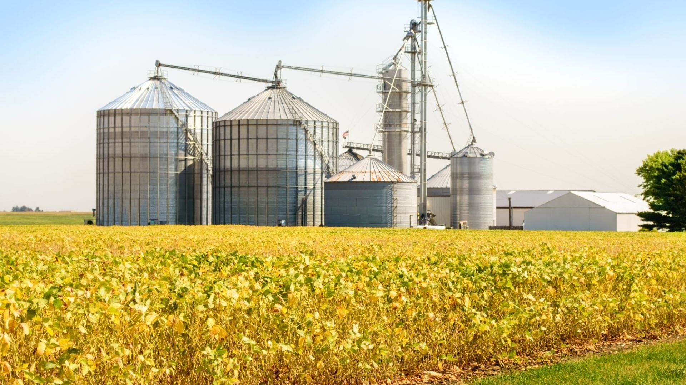
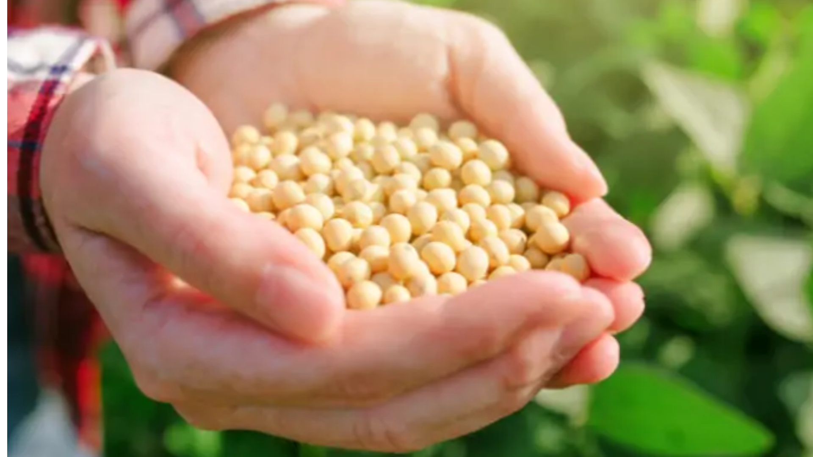
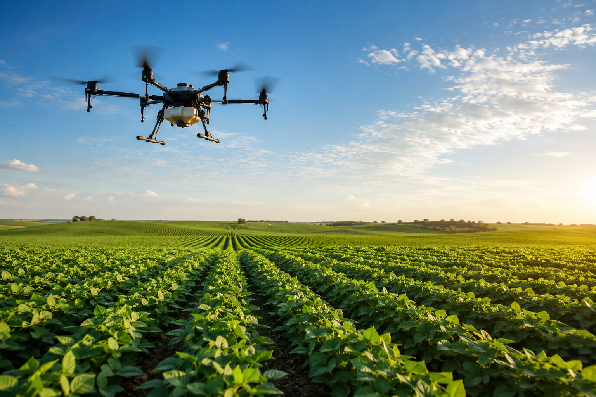

A Importancia do Agro








A agricultura é uma pratica do cultivo do solo com a ideia central de produzir alimentos ou matérias-primas, ela sendo uma pratica econômica integrante ao setor primário, voltada ao seres humanos. Ela pode ser classificado em sistemas extensivos ou intensivos com base no emprego de mão de obra, no volume de capital investido e nas práticas desenvolvidas na lavoura. A produção agrícola constitui a base econômica de muitos países, como é o caso do Brasil.
A origem da agricultura remonta ao período Neolítico, há cerca de 12 mil anos. eles foram passando da sua época de nômades, precisando caçar e coletar alimentos por todos e quaisquer canto para uma vida sedentária que tinha como o foco no cultivo e na domesticação de animais. Tem como justificativa a necessidade de garantir comida constante, o fim da ultima Era do Gelo e o clima ficou mais estavel e houve maior aumento de regiões férteis.
Brasil Escola: PENA, Rodolfo F. Alves. "Agricultura". Brasil Escola. Disponível em: https://brasilescola.uol.com.br/o-que-e/geografia/o-que-e-agriculture.htm. Acesso em: 9 jun. 2026.
Lucidarium: SOUZA, Felipe. "Origem e História da Agricultura". Lucidarium. Disponível em: https://lucidarium.com.br/agriculture-evolucao-origem-historia-caracteristicas/. Acesso em: 9 jun. 2026.